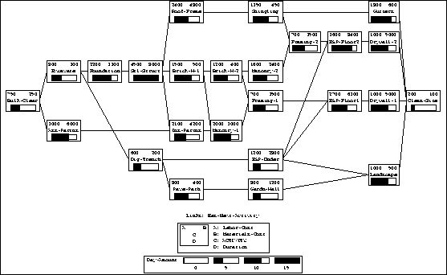
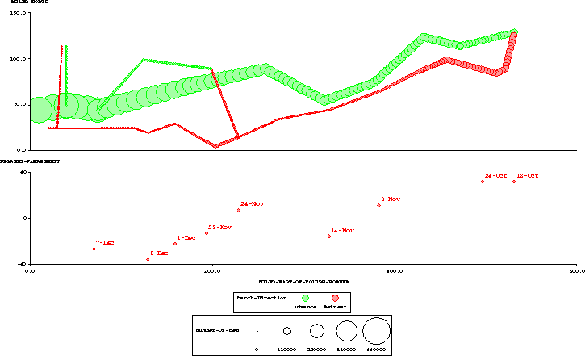

The SAGE project is developing systems which automate the process of designing presentations of information. An automatic presentation system is an intelligent interface component which receives information from a user or application program and designs a combination of graphics and text that effectively conveys it. It's purpose is to assume as much responsibility for designing displays as required by a user, from layout and color decisions to broader decisions about the types of charts, tables and networks that can be composed within a display. The SAGE project is developing an interactive data exploration environment which contains automatic display design capabilities integrated with data navigation, manipulation and modification tools. These tools are being used to explore large amounts of diverse data from marketing, logistical, real estate, census and other databases.
Roth, S.F. & Mattis, J.A. "Data Characterization for Intelligent Graphics Presentation", In CHI'90: Proceedings of the ACM/SIGCHI Conference on Computer Human Interaction, Seattle, April, 1990. pages 193-200.